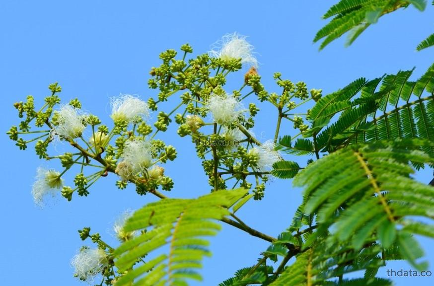
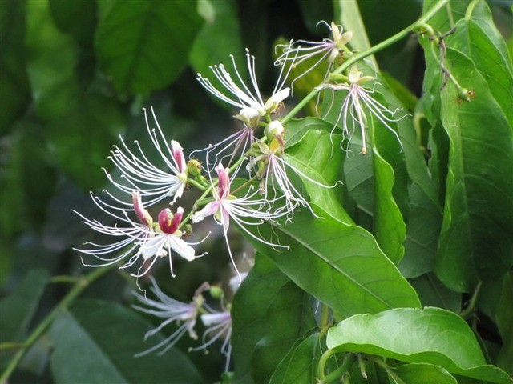
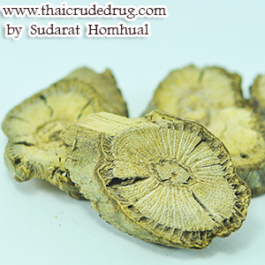
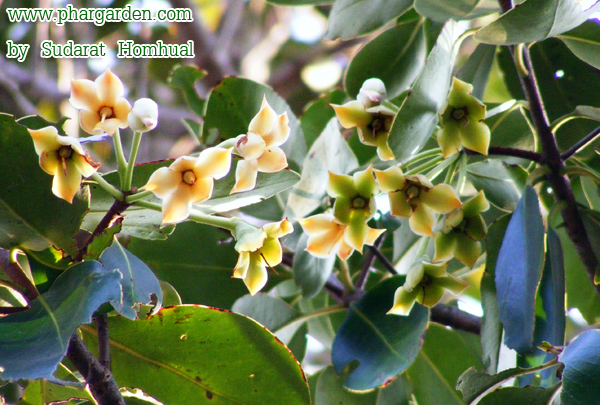
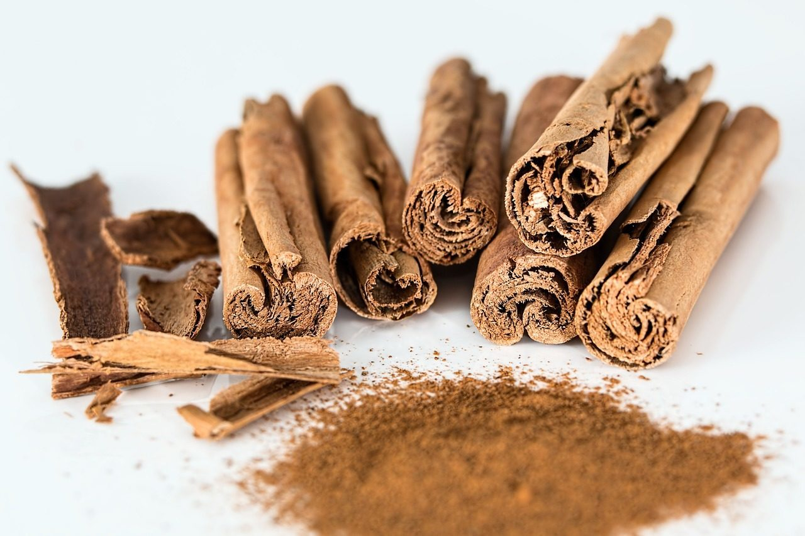
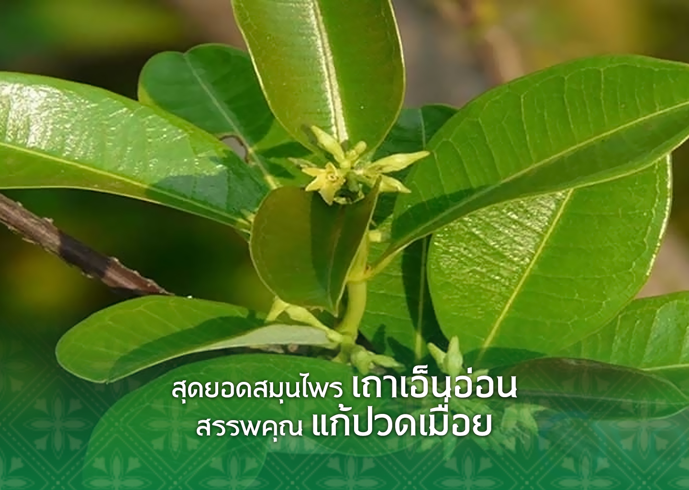

สมุนไพรที่อาจสูญพันธิ์

ถั่วดินโคก
ชื่ออื่นๆ พิศนาศน์
สรรพคุณของถั่วดินโคก
- ยาสมุนไพรพื้นบ้านของจังหวัดอุบลราชธานี จะใช้รากพิษนาศน์ นำมาฝนกับน้ำดื่มเป็นยาช่วยลดไข้ในเด็ก ใช้ต้มกับน้ำดื่มเป็นยาบำรุงน้ำนมของสตรี (กินมากไม่ดี) ใช้ฝนทาแก้พิษงู (ต้องว่าคาถาด้วย) และใช้ลำต้น ราก เหง้า และใบนำมาฝนทาเป็นยาแก้ฝี
ข้อมูลอ้างอิง (Source) : https://medthai.com/%e0%b8%9e%e0%b8%b4%e0%b8%a9%e0%b8%99%e0%b8%b2%e0%b8%a8%e0%b8%99%e0%b9%8c/ | Medthai

เทพทาโร
ชื่ออื่นๆ ข่าต้น จะไคต้น จะไคหอม จวงหอม
สรรพคุณของเทพทาโร
- แก้อาการปวดท้อง
- ช่วยขับลมในลำไส้และกระเพาะอาหารให้เรอ
- แก้เสียดท้อง ท้องขึ้น ท้องเฟ้อ
- แก้ปวดเมื่อยเคล็ดขัดยอก (น้ำมัน)
- แก้แมลงสัตว์กัดต่อย (น้ำมัน)
- แผลไฟไหม้น้ำร้อนลวก (น้ำมัน)
ข้อมูลอ้างอิง (Source) : https://www.disthai.com/17339439/%E0%B9%80%E0%B8%97%E0%B8%9E%E0%B8%97%E0%B8%B2%E0%B9%82%E0%B8%A3

มะตูมนิ่ม
ชื่ออื่นๆ มะปิน หมากตูม ทันตาเถร
สรรพคุณของมะตูมนิ่ม
- หมอผีหรือหมอไสยาศาสตร์ นำใบมะตูมมาใช้ประโยชน์ ใช้ไล่ภูตผีปีศาจ ปัดกวาดเสนียดจัญไรให้พ้นไปจากบ้านเรือน นอกจากนั้น ผลมะตูมนิ่ม คนโบราณจะนำมาทำเป็น ยาอายุวัฒนะ เพื่อบำรุงกำลัง บำรุงเพศเสริมสมรรถภาพทางเพศ เพื่อชะลอความแก่ ทำให้ผมหงอกช้า โดยการนำมาสผมกับ กล้วยน้ำไท และน้ำผึ้ง ปั้นเป็นลูกกอน รับประทาน เรียกตำรับยานี้ว่า “ลูกแปลกแม่” และอีกตำรับยาหนึ่งจะมีส่วนผสมของกล้วยน้ำไท เม็ดพริกไทยดำและผลมะตูมนิ่ม นอกจากจะเป็นยาบำรุงกำลังท่านหญิงและผู้ชายแล้ว ยังมีสรรพคุณอื่นอีก
ข้อมูลอ้างอิง (Source) : https://www.thaicentralgarden.com/fruit/bael-soft/ | Medthai

มะหาด
ชื่ออื่นๆ หาดขนุน ปวกหาด ฮัด ตาแปง
สรรพคุณของมะหาด
- เป็นยาขับพยาธิตัวตืดและพยาธิไส้เดือน
- ทาแก้ผื่นคัน
- แก้ลม แก้ท้องอืดเฟ้อ
- แก้กษัย แก้เส้นเอ็นพิการ
- แก้เบื่ออาหาร
- แก้หอบหืด
ข้อมูลอ้างอิง (Source) : https://www.disthai.com/17066265/%E0%B8%A1%E0%B8%B0%E0%B8%AB%E0%B8%B2%E0%B8%94

เร่ว
ชื่ออื่นๆ เร่วใหญ่ มะอี๋ เร่วกระวาน หมากเนิง
สรรพคุณของเร่ว
- แก้ริดสีดวงทวาร
- แก้หืดไอ
- ช่วยลดความเป็นพิษของสารพิษต่อตับ
- ช่วยบรรเทาอาการปวดประจำเดือน
- แก้ความดันโลหิตต่ำ
- ช่วยลดไขมันในเลือด
ข้อมูลอ้างอิง (Source) : https://www.disthai.com/17105301/%E0%B9%80%E0%B8%A3%E0%B9%88%E0%B8%A7

หัวร้อยรู
ชื่ออื่นๆ ป่าช้าผีมด คาลูบูตาสิมา กระเช้าผีมด ปุมเป้า
สรรพคุณของหัวร้อยรู
- ใช้บำรุงหัวใจ
- แก้ท้องร่วง
- แก้เบาหวาน
- แก้มะเร็ง
- ใช้ถอนพิษไข้
- ใช้พาฬแก้พิษอักเสบ บวมช้ำ
ข้อมูลอ้างอิง (Source) : https://www.disthai.com/17226055/%E0%B8%AB%E0%B8%B1%E0%B8%A7%E0%B8%A3%E0%B9%89%E0%B8%AD%E0%B8%A2%E0%B8%A3%E0%B8%B9

กระทุ่มนา
ชื่ออื่นๆ กระทุ่มน้ำ กระทุ่มดง ตุ้มน้อย ท่อมนา กุ่มพาย
สรรพคุณของกระทุ่มนา
- ใช้แก้ท้องร่วง
- แก้มูกเลือด
- แก้โลหิตตกทวาร หนักเบา
- แก้ลมอัควารันตวาโย
- ป้องกันทารกสำรอกในระยะ 6 เดือน
- แก้คุดทะราด
ข้อมูลอ้างอิง (Source) : https://www.disthai.com/17387982/%E0%B8%81%E0%B8%A3%E0%B8%B0%E0%B8%97%E0%B8%B8%E0%B9%88%E0%B8%A1%E0%B8%99%E0%B8%B2

ขันทองพยาบาท
ชื่ออื่นๆ มะดูกเลื่อม หมากดูก ขันฑสาร ช้องรำพัน กระดูก
สรรพคุณของขันทองพยาบาท
- แก้น้ำเหลืองเสีย
- แก้พิษในกระดูก
- แก้ลมพิษ
- รักษามะเร็งคุด
- ใช้รักษาโรคผิวหนัง
- ใช้รักษาเหงือกอักเสบ
ข้อมูลอ้างอิง (Source) : https://www.disthai.com/17189420/%E0%B8%82%E0%B8%B1%E0%B8%99%E0%B8%97%E0%B8%AD%E0%B8%87%E0%B8%9E%E0%B8%A2%E0%B8%B2%E0%B8%9A%E0%B8%B2%E0%B8%97

จุกโรหินี
ชื่ออื่นๆ ข้าวฟ่าง บวบลม พุงปลา กล้วยมุสัง กล้วยไม้
สรรพคุณของจุกโรหินี
- ผลนำมาต้มกับน้ำดื่ม จะช่วยลดระดับน้ำตาลในเลือดได้
- ช่วยแก้อาการอ่อนเพลีย ช่วยบำรุงกำลัง
- รากใช้เป็นยาแก้ไข้เพื่อโลหิต แก้ลมปลายไข้
- ช่วยแก้อาการร้อนในกระหายน้ำ ช่วยลดความร้อนในร่างกาย
- ช่วยแก้หอบหืด
- ช่วยแก้อาการอาเจียน
ข้อมูลอ้างอิง (Source) : https://medthai.com/%e0%b8%88%e0%b8%b8%e0%b8%81%e0%b9%82%e0%b8%a3%e0%b8%ab%e0%b8%b4%e0%b8%99%e0%b8%b5/

ชะเอาไทย
ชื่ออื่นๆ ตาลอ้อย อ้อยสามส่วน ย่านงาย อ้อยช้าง
สรรพคุณของชะเอาไทย
- เนื้อไม้ช่วยบำรุงธาตุในร่างกาย
- ช่วยบำรุงกำลัง
- ช่วยแก้โรคตา
- ช่วยแก้กำเดาให้เป็นปกติ
- ช่วยขับเสมหะ แก้น้ำลายเหนียว
- ดอกแก้ดีและโลหิต
ข้อมูลอ้างอิง (Source) : https://medthai.com/%E0%B8%8A%E0%B8%B0%E0%B9%80%E0%B8%AD%E0%B8%A1%E0%B9%84%E0%B8%97%E0%B8%A2/

ชิงชี่
ชื่ออื่นๆ กระโรกใหญ่ แสมชง พญาจอมปลวก ค้อนฆ้อง
สรรพคุณของชิงชี่
- แก้ไข้เพื่อดี และโลหิต
- ใช้แก้ไข้ร้อนภายในทุกชนิด
- แก้สุกใส
- แก้ไอ
- ช่วยขับปัสสาวะ
- ช่วยถอนพิษต่างๆ
ข้อมูลอ้างอิง (Source) : https://www.disthai.com/17339444/%E0%B8%8A%E0%B8%B4%E0%B8%87%E0%B8%8A%E0%B8%B5%E0%B9%88

ตับเต่า
ชื่ออื่นๆ เฮื้อนกวาง มะไฟผี เฮื้อนกวง แฮกวาง
สรรพคุณของตับเต่า
- ใช้ดับพิษร้อน
- แก้ร้อนใน
- แก้วัณโรค
- ใช้แก้ท้องร่วง
- ดับพิษร้อน
- แก้ผิดสำแดง
ข้อมูลอ้างอิง (Source) : https://www.disthai.com/17367880/%E0%B8%95%E0%B8%B1%E0%B8%9A%E0%B9%80%E0%B8%95%E0%B9%88%E0%B8%B2%E0%B8%95%E0%B9%89%E0%B8%99

นางแย้มป่า
ชื่ออื่นๆ ปิ้งหลาง ขี้ขม ซมซี่ ฮอนห้อแดง
สรรพคุณของนางแย้มป่า
- ช่วยรักษาลำไส้อักเสบ
- แก้โรคเริม
- รักษางูสวัด
- แก้ผื่นคัน
- แก้ไตพิการ
- แก้อาการปวดหัวข้างเดียว
ข้อมูลอ้างอิง (Source) : https://www.disthai.com/17198506/%E0%B8%99%E0%B8%B2%E0%B8%87%E0%B9%81%E0%B8%A2%E0%B9%89%E0%B8%A1%E0%B8%9B%E0%B9%88%E0%B8%B2

ปลาไหลเผือก
ชื่ออื่นๆ พญารากเดียว แฮพันชั้น เพียก หยิกบ่อถอง
สรรพคุณของปลาไหลเผือก
- ถ่ายพิษต่างๆ ถ่ายฝีในท้อง ถ่ายพิษไข้พิษเสมหะ และโลหิต
- แก้ไข้มาลาเรีย
- แก้ลม
- ขับเหงื่อ ขับพยาธิ
- แก้ท้องผูก
- ต้านเซลล์มะเร็ง
ข้อมูลอ้างอิง (Source) : https://www.disthai.com/16661536/%E0%B8%9B%E0%B8%A5%E0%B8%B2%E0%B9%84%E0%B8%AB%E0%B8%A5%E0%B9%80%E0%B8%9C%E0%B8%B7%E0%B8%AD%E0%B8%81

พังคี
ชื่ออื่นๆ ปังคี
สรรพคุณของพังคี
- รากใช้เข้ายาแก้ไข้ โดยผสมกับสมุนไพรชนิดอื่นอีก 34 ชนิด ใช้ต้มกับน้ำดื่มแก้ไข้
- รากพังคีช่วยแก้อาการจุกเสียด แก้ท้องอืด ท้องขึ้น ท้องเฟ้อ ปวดท้อง ปวดแน่นท้อง
- รากใช้ตำประคบแก้อาการปวด
ข้อมูลอ้างอิง (Source) : https://medthai.com/%e0%b8%9e%e0%b8%b1%e0%b8%87%e0%b8%84%e0%b8%b5/

มะคังแดง
ชื่ออื่นๆ มะคัง มุยแดง จงก่าขาว
สรรพคุณของมะคังแดง
- เนื้อไม้มีรสเย็นเฝื่อน ใช้ต้มกับน้ำดื่มเป็นยาแก้เลือดลมเดินไม่สะดวก แก้พิษโลหิตและน้ำเหลือง
- ใช้เป็นยาแก้ไข้
- เนื้อไม้นำมาต้มกับน้ำดื่มเป็นยาแก้อาการปวดท้อง
- รากใช้เป็นยาถ่าย
- แก่นนำมาต้มกับน้ำดื่มเป็นยาแก้อาการประจำเดือน
ข้อมูลอ้างอิง (Source) : https://medthai.com/%e0%b8%a1%e0%b8%b0%e0%b8%84%e0%b8%b1%e0%b8%87%e0%b9%81%e0%b8%94%e0%b8%87/

สะค้าน
ชื่ออื่นๆ ตะค้านเล็ก ตะค้านหยวก จั๊กค่าน มังเหาเจ๊าะ
สรรพคุณของสะค้าน
- แก้ลมอัมพฤกษ์
- ขับลมในลำไส้
- รักษาธาตุ
- เป็นยาแก้ลมอัมพฤกษ์
- บำรุงธาตุทำให้ผายเรอ
- แก้ธาตุพิการ
ข้อมูลอ้างอิง (Source) : https://www.disthai.com/16488299/%E0%B8%AA%E0%B8%B0%E0%B8%84%E0%B9%89%E0%B8%B2%E0%B8%99

สารภีป่า
ชื่ออื่นๆ ปันม้า ส้านแดง ส้านใหญ่ ประดงข้อ
สรรพคุณของสารภีป่า
- ดอกมีสรรพคุณเป็นยาบำรุงหัวใจ
- ตำรายาไทยจะใช้เปลือกและดอกเป็นยาแก้ไข้
- ดอกมีสารช่วยขยายหลอดลม และช่วยขับลม
- ตำรายาพื้นบ้านล้านนาจะใช้สารภีป่าทั้งต้น นำมาผสมกับสมุนไพรจำพวกประดง รวม 9 ชนิด นำมาต้มกับน้ำดื่มเป็นยารักษาโรคประดง
- ใช้เป็นยาถ่ายพยาธิ
- เปลือกและดอกมีสรรพคุณเป็นยาแก้บิด
ข้อมูลอ้างอิง (Source) : https://medthai.com/%e0%b8%aa%e0%b8%b2%e0%b8%a3%e0%b8%a0%e0%b8%b5%e0%b8%9b%e0%b9%88%e0%b8%b2/

อบเชยไทย
ชื่ออื่นๆ บอกคอก พญาปราบ สะวง กระดังงา
สรรพคุณของอบเชยไทย
- ช่วยย่อยสลายไขมัน ควบคุมระดับไขมันในเลือด และคอเลสเตอรอลชนิดเลว (LDL) ให้มีระดับต่ำลง
- อบเชยจีนมีรสเผ็ดอมหวาน มีฤทธิ์ร้อน ช่วยบำรุงธาตุไฟในระบบไต ตับ ม้าม และหัวใจ
- ช่วยแก้อาการคลื่นไส้อาเจียน
- ช่วยแก้ไอเย็น หืดหอบเนื่องมาจากลมเย็นกระทบ
- รากใช้ปรุงเป็นยาแก้อาการปวดฟัน
- ช่วยรักษาแผลในกระเพาะอาหาร
ข้อมูลอ้างอิง (Source) : https://medthai.com/%e0%b8%ad%e0%b8%9a%e0%b9%80%e0%b8%8a%e0%b8%a2/

เฉียงพร้านางแอ
ชื่ออื่นๆ แก๊ก วงคต บงคด นกข่อ ขิงพร้า
สรรพคุณของเฉียงพร้านางแอ
- ลำต้นใช้ต้มน้ำดื่มช่วยบำรุงร่างกาย
- ลำต้นใช้ฝนน้ำดื่มช่วยแก้ไข้ หรือใช้เปลือกต้นนำมาต้มกับน้ำอาบจะช่วยรักษาไข้ตัวร้อน
- ช่วยแก้บิด
- ช่วยในการสมานแผล
- แก่นช่วยขับลม
- ช่วยแก้อาการร้อนในกระหายน้ำ
ข้อมูลอ้างอิง (Source) : https://medthai.com/%e0%b9%80%e0%b8%89%e0%b8%b5%e0%b8%a2%e0%b8%87%e0%b8%9e%e0%b8%a3%e0%b9%89%e0%b8%b2%e0%b8%99%e0%b8%b2%e0%b8%87%e0%b9%81%e0%b8%ad/

เถาเอ็นอ่อน
ชื่ออื่นๆ เครือขาวเอ็น เขาควาย เสน่งกู หญ้าลิเลน กวน
สรรพคุณของเถาเอ็นอ่อน
- ใช้เป็นยาฟอกเลือด
- ช่วยทำให้จิตใจชุ่มชื่น
- เป็นยาบำรุงเส้นเอ็น
- แก้ปวดเสียวเส้นเอ็น
- ปวดเมื่อยตามร่างกาย ปวดหลัง แก้ขัดยอก
- ลดความเครียด
ข้อมูลอ้างอิง (Source) : https://www.disthai.com/16488291/%E0%B9%80%E0%B8%96%E0%B8%B2%E0%B9%80%E0%B8%AD%E0%B9%87%E0%B8%99%E0%B8%AD%E0%B9%88%E0%B8%AD%E0%B8%99

เปราะหอม
ชื่ออื่นๆ เปราะหอมขาว ว่านหอม เสน่ห์จันทร์หอม ว่านตีนดิน
สรรพคุณของเปราะหอม
- แก้หวัดคัดจมูก
- แก้เสมหะ เจริญไฟธาตุ
- แก้กำเดา
- แก้เสมหะ เจริญไฟธาตุ
- แก้อีสุกอีใส
- แก้เกลื้อนช้าง
ข้อมูลอ้างอิง (Source) : https://www.disthai.com/17063057/%E0%B9%80%E0%B8%9B%E0%B8%A3%E0%B8%B2%E0%B8%B0%E0%B8%AB%E0%B8%AD%E0%B8%A1